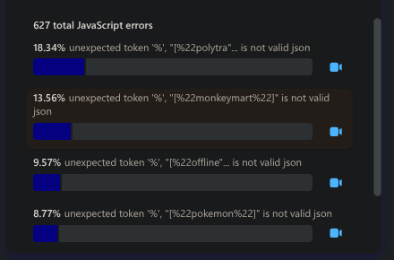

Investigating Undefined Token Error
Got a bug eport that games were not loading. I found js the issue. They and another user were encountering an undefined token error when the website processes the games.json file (which contains the master list of all the games, PFPs, and games folders). Your error is:
I don't know what is causing this because the JSON is valid and doesn't include the spaces (%22 means space). The other user is also encountering this error, but instead it breaks when it reaches Minecraft in the JSON. The other user clicked on the "play a random game" button, and that returned "game list is not defined." This leads me to believe that this is an issue with your Chromebook caching the JSON file, and it is getting corrupted or encoded improperly.
I updated the site so that if the games don't load after one second, you should see a message and a mockup console with all the errors. You can click the copy button to copy all the errors and submit that in a bug report. Also, I put a button below that attempts to recache the JSON file.
Simply put, I can't replicate this error and don't know why this is happening. I think it is a caching issue, so I added a "click me to fix maybe?" button along with more advanced error logging so that if it happens again, you can submit the logs, which will hopefully help me.
Fixed Cookie Handling Bug in Pinned Games
I then found the bug and the issue was not their chromebooks but insted a major bug where games wouldn't load if you had any games pinned. This was caused by the cookie I was storing from the new cookie popup being stored as plain true instead of "true" (JSON format). Oops 😅.
To prevent this in the future I also improved cookie handling in the game loading script, it now checks and filters out any non-JSON cookies when fetching pinned games. So even if I mess up cookies again in the future, it won’t break game loading and the website for users with pinned games.
To the 2 people who made a bug report, thank you!
- Me